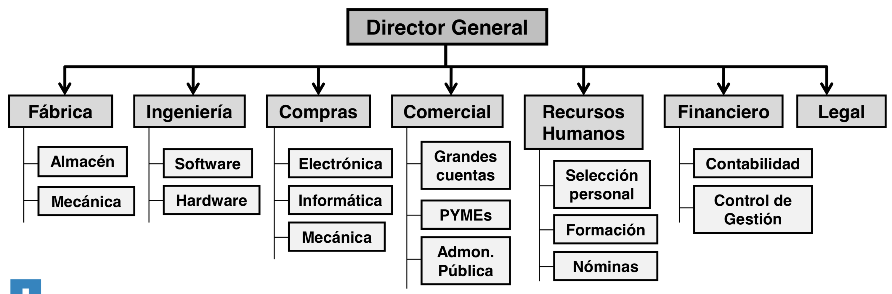
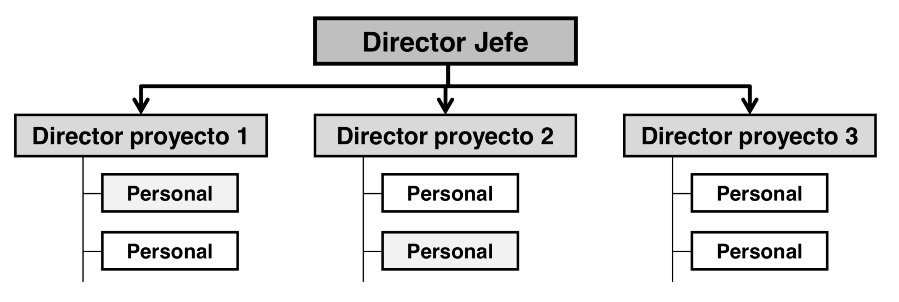
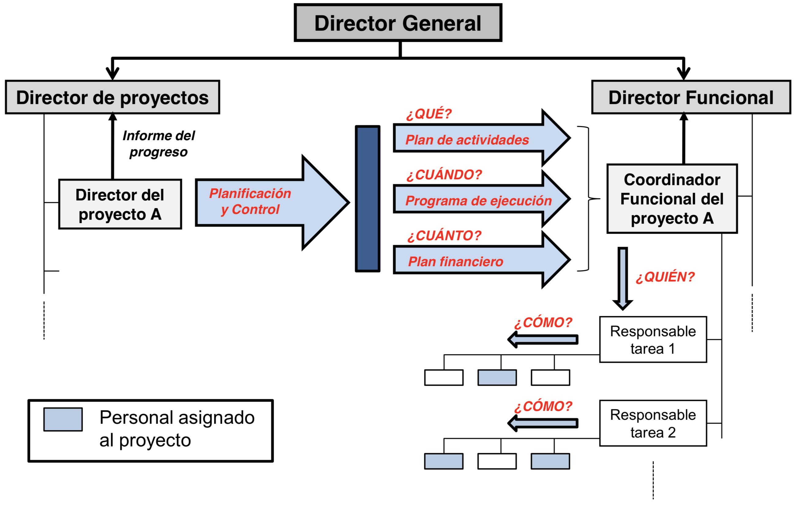

La conducta humana en la organización
Estructura organizacional
La estructura organizacional es fundamental en todas las empresas, define muchas características de cómo se va a organizar, tiene la función principal de establecer autoridad, jerarquía, cadena de mando, organigramas y departamentalizaciones, entre otras.
Las organizaciones deben contar con una estructura organizacional de acuerdo a todas las actividades o tareas que pretenden realizar, mediante una correcta estructura que le permita establecer sus funciones, y departamentos con la finalidad de producir sus servicios o productos, mediante un orden y un adecuado control para alcanzar sus metas y objetivos.
Tipos de estructuras organizacionales
Si bien con el afianzamiento del Management 4.0 en el mundo organizacional, el cuál basa su estructura organizacional en estructuras flexibles, centradas en la satisfacción de los empleados/clientes; se siguen utilizando en muchas organizaciones otro tipos de estructuras, los cuales pueden ser:
Organización Funcional
Responde a la necesidad de la organización de disponer de una serie de capacidades o destrezas (funciones) con continuidad para su utilización en distintas actividades.
- Está organizada de forma vertical con relaciones jerárquicas que distinguen nítidamente las distintas responsabilidades.
- El personal está organizado por especialidades.
- Al proyecto se le asignan personas de distintas áreas funcionales (el diseño lo realiza el área de ingeniería, el abastecimiento el área de compras, los presupuestos el área comercial, los cursos el área de formación, etc.
- La coordinación de los proyectos la hacen los directores de las áreas involucradas.

Organización orientada a proyectos
Organización totalmente opuesta a la funcional:
- Se designa un director de proyecto para cada uno de los proyectos en curso.
- El director tiene total responsabilidad y autoridad.
- Es el interlocutor único con los involucrados en el proyecto.
- Los miembros del equipo de proyecto son, generalmente, asignados al proyecto, por lo que una vez finalizado, pueden salir del equipo.

Organización matricial
Organización intermedia entre las dos anteriores, con diferentes grados de reparto de la autoridad y de la responsabilidad entre los directores funcionales y los directores de proyectos.
Los proyectos se reconocen como actividades propias de la organización, pero al director de proyecto se le asignan sólo algunas funciones.
El director de proyecto se encarga, generalmente, de la planificación y control del proyecto. Esto es:
- Desarrollar y mantener el plan de proyecto.
- Establecer el plan de realización o ejecución.
- Realizar el plan financiero.
- Evaluar el grado de realización del proyecto e informar del mismo.
En la dirección funcional, un coordinador funcional se encarga de dirigir, técnicamente, el proyecto. Este coordinador decide quién es responsable de cada tarea y cómo, quién y con qué prioridad se hace cada tarea. Asimismo, controla la realización de las tareas e informa del grado de avance.

Organización mixta
Son una mezcla de las Organizaciones Funcionales y de las Matriciales.
Dependiendo de si son más o menos funcionales, más o menos matriciales, pueden ser:
- Organización matricial débil.
- Organización matricial balanceada.
- Organización matricial fuerte.
- Organización matricial compuesta.
Por tanto, aspectos como el papel del director de proyecto y su nivel de autoridad y responsabilidad, recursos y origen de los recursos dedicados al proyecto, etc. dependen de la clasificación anterior.
Bibliografía
- Artículo PDF: Organización Empresarial y Proyectos.- Escuela Politécnica Superior – Universidad Autónoma de Madrid (suministrado por la cátedra)
- Alvarez, H. (2003). Administración : un enfoque interdisciplinario y competitivo. Argentina: Eudecor.